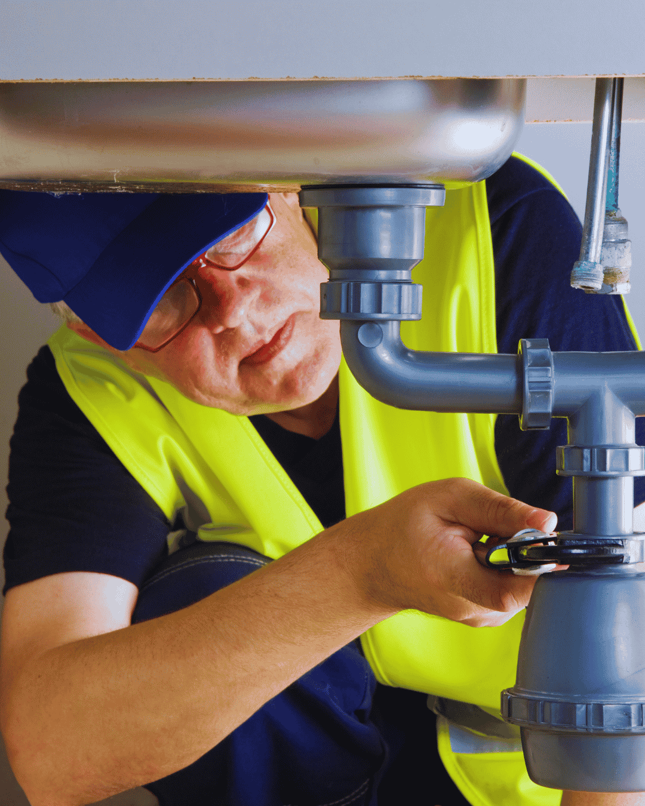

Toilet repair in Boynton Beach is one of those jobs where the cheap fix and the right fix are often the same thing. A flapper, a fill valve or a wax ring solves the large majority of complaints, and none of them take long. We run toilet repair and installation from same-day plumbing across Palm Beach County and across the county, including Greenacres and Highland Beach.
The problems worth taking seriously are water at the base and a toilet that rocks. Both mean the seal to the flange has failed, and both let waste water seep into the subfloor every single flush.
When replacement makes more sense, we set the new unit properly: new supply line, new wax or waxless seal, level shims, bolts cut and capped, and a caulk bead that leaves the back open so a future leak can be seen.

Warning signs
Toilet Problems That Need Professional Toilet Repair
Some of these you can live with for a week. Others are quietly damaging your floor.
- Water pooling around the base after a flush
- A toilet that rocks when you sit down
- Running water that never quite stops
- Needing to hold the handle down to flush
- Clogging more than once a week
- A crack in the tank or bowl porcelain
- Sewage smell in the bathroom that cleaning does not fix
- Weak flush that leaves the bowl dirty
A toilet that runs quietly can waste more than 6,000 gallons a month. On a Palm Beach County bill, that is real money for a ten dollar part.
What the visit includes
Toilet Repair and New Toilet Installation Services We Provide
Repair first where it makes sense. Replacement when the porcelain or the water use makes it worthwhile.
Internal repairs
Fill valves, flappers, flush valves, handles and supply lines replaced with quality parts, not builder-grade plastic.
Reseal and reset
Toilet pulled, flange inspected and repaired, new seal set and the unit shimmed level and secured.
Clog clearing
Auger and camera work for stubborn clogs, including objects lodged in the trapway.
New installation
Comfort height, elongated, dual flush and bidet-ready models supplied and installed, old unit hauled away.
Toilet running or leaking at the base?Call for same-day toilet repair with the price agreed before we start.
Diagnosis
What a Running, Rocking or Weak-Flushing Toilet Is Telling You
Toilets fail in a small number of ways, and the symptom points almost directly at the part.
Running intermittently
The flapper is leaking slowly, the tank level drops, and the fill valve kicks on to top it up. Hard water builds calcium on the flapper seat until the seal never fully closes. A quiet runner can waste thousands of gallons a month for the sake of an inexpensive part.
Rocking when you sit
The bowl is not secured to a solid flange. In older homes here the cast iron closet flange has usually rusted and broken, so the bolts have nothing to grip. Stacking wax rings hides it while waste water keeps seeping into the subfloor. The correct repair is a flange repair ring or a new flange.
Weak or incomplete flush
Mineral deposits block the small rim jets and the siphon jet, so water enters the bowl without enough force to clear it. Descaling the jets restores performance on a sound bowl.
Water at the base
The wax or waxless seal has failed. Every flush pushes a little water under the bowl and into the floor. This one should not wait, because subfloor repair costs far more than the reseal.
Bubbling or gurgling
That is a venting or main line issue, not the toilet. If it bubbles when the washer drains, look at the drain line rather than the fixture.

Boynton Beach conditions
Hard Water, Old Flanges and Boynton Beach Bathrooms
Hard water shortens the life of every rubber part inside a toilet tank. Calcium builds on the flapper seat until the seal never quite closes, which is why so many local toilets run intermittently. It also blocks the small rim jets, which is what turns a strong flush weak over a few years.
The other local issue is the flange. Older Boynton Beach homes have cast iron closet flanges set into the slab, and after fifty years the ring rusts and breaks. When that happens the bolts have nothing solid to grip, so the toilet rocks and the seal fails no matter how many wax rings get stacked under it. The correct repair is a flange repair ring or a new flange, not another ring.
If you are remodeling, this is also the moment to consider a comfort-height model. It costs the same to install and makes a real difference in a home where anyone is aging in place.
Buying advice
Choosing a New Toilet for a Boynton Beach Bathroom
If replacement is the plan, a few choices make a real difference over the following decade, and they cost the same to install.
Comfort height
A bowl height of 17 to 19 inches is easier to use and matters in any home where somebody is aging in place. Standard height sits around 15 inches. Installation labor is identical.
Glazed trapway
On hard local water, a fully glazed internal trapway resists mineral buildup and clogs far better than an unglazed one. This is the single specification most worth paying for here.
One piece or two
One-piece units have no tank-to-bowl seam to leak and are easier to clean, but they are heavy and cost more. Two-piece units are lighter, cheaper and simpler to repair.
Flush technology
Modern 1.28 gallon units flush well and meet water efficiency standards. Dual flush saves more, and pressure-assisted models clear heavy loads forcefully but run loud. Match the choice to the bathroom.
Rough-in measurement
Measure from the finished wall to the center of the closet bolts. Twelve inches is standard, but ten and fourteen inch rough-ins exist in older homes and buying the wrong one means a return trip.
Pricing
Toilet Repair and Installation Cost in Boynton Beach
Internal part repairs are inexpensive and flat rated. A pull-and-reset with a new seal costs more because the toilet has to come up. A full installation is quoted with or without the fixture, so you can supply your own if you have already bought one.
| Factor | Keeps the price down | Pushes the price up |
|---|---|---|
| Repair or replace | A flapper, fill valve or supply line | A cracked tank or bowl, which cannot be repaired |
| Flange condition | A sound flange needing only a new wax seal | A corroded or broken flange needing repair |
| Subfloor | Dry and solid underneath | Soft subfloor from a long-term seal leak |
| Unit type | A standard two-piece replacement | Wall-hung, skirted or smart units with their own fittings |
| Access | An open bathroom | Tight clearances or tile that must be protected |
You will not be quoted blind. Call (833) 567-2788 for the range and get the written price on site.
Before you call
Checks That Solve Most Toilet Complaints
A running or weak-flushing toilet is often a five-minute fix you can diagnose yourself.
- Lift the tank lid and watch a flush; a flapper that does not seat is the usual cause of running.
- Check the water level against the fill line marked inside the tank.
- Add a few drops of food coloring to the tank; colour in the bowl means the flapper leaks.
- Rock the bowl gently. Any movement means the flange seal is the real problem.
One thing not to do: If water appears at the base of the bowl, stop using that toilet. That water is reaching the subfloor and the damage grows quietly.
Urgency
When Is a Toilet Problem Urgent?
A running toilet wastes water but can wait a day. Call right away if:
- It overflows and the shutoff at the wall will not close.
- Waste water rises in the bowl when another fixture drains.
- The bowl rocks and water is pooling at the base.
- It is the only toilet in the house and it is out of service.
If any of those describe what you are seeing, call (833) 567-2788 now rather than booking online. Emergency calls are moved to the front of the queue.
FAQs
Toilet FAQs
Why does my toilet run at random times?
The flapper is leaking slowly, the tank drops, and the fill valve kicks on to top it up. It is almost always a flapper or a fill valve.
Can a rocking toilet be fixed with shims alone?
Only if the flange is sound. If the flange is broken, shims hide the problem while the seal keeps leaking underneath.
How long does a toilet installation take?
About an hour for a standard replacement, longer if the flange needs repair or the old unit is set in mortar.
Are dual-flush toilets worth it?
They save water and modern ones flush well. On a hard water supply, choose a model with a glazed trapway to resist buildup.
Can you install a bidet seat?
Yes. Most need a nearby outlet and a tee at the supply, both of which we handle during the visit.
Is a running toilet actually worth fixing quickly?
Yes, because it is the cheapest repair on this page and it runs continuously. A flapper or fill valve is a same-visit job, and leaving it is simply paying the water utility for nothing month after month.
Related plumbing services
Bathroom Plumbing Services Related to Toilet Repair
These three sit closest to this service in practice, not just in a list.
Faucet & Fixture Installation
If the toilet is being replaced as part of a refresh, the angle stops and supply lines on every fixture are worth doing at the same time.
Drain Cleaning
A toilet that bubbles when another fixture drains is not a toilet fault. That is the drain line asking for attention.
Kitchen and Bathroom Plumbing
Moving a toilet rather than replacing it changes the job entirely, because the drain and vent have to move with it.
View all 16 plumbing services →
Toilet Repair Near You in Palm Beach County
- Toilet Repair in Delray Beach
- Toilet Repair in Lake Worth Beach
- Toilet Repair in Lantana
- Toilet Repair in Boca Raton
- Toilet Repair in Wellington
- Toilet Repair in Greenacres
- Toilet Repair in Hypoluxo
- Toilet Repair in Ocean Ridge
- Toilet Repair in Manalapan
- Toilet Repair in Palm Springs
- Toilet Repair in West Palm Beach
- Toilet Repair in Highland Beach
Toilet running or leaking?
Same-day toilet repair and installation across Boynton Beach, with the price agreed before we start.